位置稳定性与膜占据定义体内皮肤成纤维细胞稳态
Positional Stability and Membrane Occupancy Define Skin Fibroblast Homeostasis In Vivo
图文摘要（Graphical Abstract）
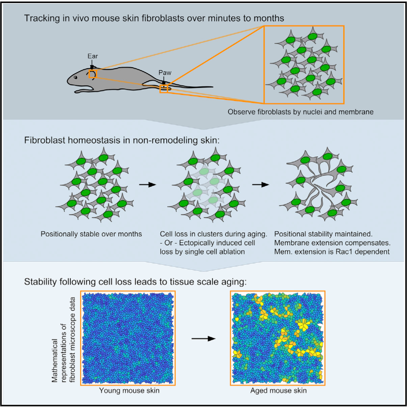
研究亮点（Highlights）
- 在非重塑（non-remodeling）组织中，即使发生细胞丢失后，皮肤成纤维细胞仍保持位置稳定（positionally stable）
- 成纤维细胞以 Rac1 依赖性方式（Rac1-dependent manner）将其细胞膜延伸至细胞缺失区域
- 在较大规模损伤中，膜延伸（membrane extension）与已知的修复行为（repair behaviors）相整合
- 衰老的成纤维细胞以稳定的细胞簇（stable clusters）形式丢失，并由邻近细胞的细胞膜加以代偿
研究简报（In Brief）
皮肤成纤维细胞随时间推移保持其位置不变，但在损伤时或衰老过程中，它们能够在空间上发生延伸，以代偿邻近细胞的丢失，从而发挥一种稳态机制（homeostatic mechanism）的作用。
摘要（SUMMARY）
成纤维细胞（fibroblasts）是我们器官中至关重要的细胞和结构组分。尽管已取得若干进展，但成纤维细胞在体内（in vivo）用来维持其稳态（homeostasis）的关键行为仍不清楚。在此，通过在活体小鼠中追踪同一批皮肤成纤维细胞，我们证明成纤维细胞的位置随时间推移是稳定的，而且尽管邻近成纤维细胞发生丢失，这种稳定性仍得以维持。相反，成纤维细胞的细胞膜在稳态期间是动态的（dynamic），并在邻近成纤维细胞丢失后以 Rac1 依赖性方式（Rac1-dependent manner）延伸以填补其留下的空间。在衰老过程中，尽管成纤维细胞核排布中的空隙（gaps）不断累积，位置稳定性依然得以保持，同时膜占据（membrane occupancy）也持续得到维持。这项工作将位置稳定性（positional stability）和细胞占据（cell occupancy）确立为小鼠整个生命周期内体内皮肤成纤维细胞稳态的核心原则，并鉴定出无迁移伴随的膜延伸（membrane extension in the absence of migration）作为执行这些原则的核心细胞机制。
引言（INTRODUCTION）
成纤维细胞（fibroblasts）是关键的细胞类型，通过其对细胞外基质（extracellular matrix, ECM）结构的贡献以及与邻近细胞的信号相互作用，对于器官稳态（organ homeostasis）至关重要（Rendl et al., 2008; Greco et al., 2009; Shyer et al., 2015）。目前对成纤维细胞的认识，建立在通过体外（in vitro）和离体（ex vivo）方法理解其行为、通过分子标志物（molecular marker）分析理解其细胞状态，以及通过电子显微镜（electron microscopy）理解其独特细胞生物学特征的基础之上（Abercrombie and Heaysman, 1954; Nishida et al., 1988; Novotny and Gnoth, 1991; Langevin et al., 2004; Liang et al., 2007; Petrie et al., 2012; Driskell et al., 2013）。哺乳动物皮肤中易于获取且解剖结构清晰的真皮层（dermal layer）为探究成纤维细胞生物学提供了极佳的模型。小鼠皮肤真皮（dermis）至少包含两个不同且在解剖学上可区分的层次：最靠近表皮（epidermis）的上层真皮（upper dermis，又称乳头层真皮），以及位于其下方的下层真皮（lower dermis，又称网状层真皮）（Driskell et al., 2013）。在发育过程中，成纤维细胞通过增殖（proliferation）定植真皮，而这种增殖在出生后第 10 天（postnatal day 10）基本停止（Rognoni et al., 2016）。然而，DNA 放射性标记（DNA radiolabeling）表明，在整个动物生命周期中，增殖仍以较低的速率持续发生（Ruchti et al., 1983）。皮肤特有的多种、且有时呈动态变化的附属器（appendages，如毛囊等）的存在，使我们在体内理解具有普适性的成纤维细胞行为变得复杂（Rahmani et al., 2014; Gharzi et al., 2003）。尽管如此，成纤维细胞在体外培养条件和皮肤创伤（cutaneous wounding）中仍保持着高度的增殖潜能（Harper and Grove, 1979; Driskell et al., 2013）。
我们对成纤维细胞动态行为的知识大多来自体外和离体实验，在这些实验中可以轻松地对细胞进行任意时间长度的追踪。研究表明，成纤维细胞迁移（fibroblast migration）涉及多种类型的膜行为，包括片状伪足（lamellipodia）和丝状伪足（filopodia），并且在体外培养和真皮外植体（dermal explants）中均受细胞外环境性质的影响（Abercrombie et al., 1970; Rhee et al., 2007; Charras and Paluch, 2008; Buccione et al., 2009; Friedl and Wolf, 2010; Ridley, 2011; Petrie et al., 2012; Wong et al., 2014）。然而，由于无法在体内随时间推移对同一个体成纤维细胞进行可视化和追踪，我们对哺乳动物皮肤中关键稳态行为的理解一直受到限制。
在此，我们利用我们已建立的活体成像（intravital imaging）方法，在完整小鼠中探究成体成纤维细胞稳态的原则。我们证明，在未受干扰（unperturbed）的条件下，非重塑皮肤（non-remodeling skin）中的成纤维细胞在数周至数月的时间尺度内位置保持稳定。出人意料的是，即使在局部成纤维细胞丢失之后，邻近成纤维细胞的细胞核仍固定在原位。相反，我们发现成纤维细胞表现出动态的细胞膜，在邻近细胞丢失后，这些细胞膜会在不发生主细胞体（main cell body）迁移的情况下，以 Rac1 依赖性方式延伸进入细胞缺失区域。在更大规模的损伤之后，我们观察到成纤维细胞将膜延伸与已知的再生行为（regenerative behaviors）结合使用，以修复真皮结构的破坏或全组织范围的细胞缺失。最后，我们证明伴随衰老发生的成纤维细胞密度下降并非均匀的细胞丢失，而是局部细胞丢失的不断累积，在这些区域中，位置稳定的邻近成纤维细胞再次通过膜延伸进行代偿。综上所述，我们的工作证明了皮肤成纤维细胞在未受干扰状态及局部细胞丢失后均具有显著的位置稳定性，同时阐明了膜动态（membrane dynamics）是小鼠整个生命周期中代偿这种细胞丢失的机制。
结果（RESULTS）
成纤维细胞在未受干扰的无毛皮肤中保持稳定（Fibroblasts Are Stable in Unperturbed Non-hairy Skin）
为了理解未受干扰皮肤中成纤维细胞稳态的原则，我们利用实验室先前开发的活体成像方法（intravital imaging approach）（Pineda et al., 2015; Rompolas et al., 2012, 2013），随时间推移对单个成纤维细胞进行可视化和追踪。我们使用一种成熟可靠的标志物 PDGFRα-H2BGFP（将组蛋白 H2B 与 GFP 融合，并敲入到 PDGFRα 基因座下由其启动子驱动表达）来区分皮肤成纤维细胞（Hamilton et al., 2003; Driskell et al., 2013）。由于皮肤器官的大多数区域是由许多亚结构构成的复杂组织，我们首先试图采用一个简化体系，聚焦于足底皮肤（skin on the base of the paw），该区域不含毛囊（hair follicles）或其他附属器以及成熟脂肪细胞（mature adipocytes）（Figure S1A）（Lim et al., 2013）。我们捕获了跨越从表皮正下方、穿过上层和下层真皮区域直至骨骼肌（skeletal muscle）整个空间的真皮成纤维细胞（Video S1；Figure S1B）。
令人惊讶的是，在数天至数周内对同一批成纤维细胞核进行重访（revisits）显示，在 4 至 8 周龄的成年小鼠中，这些细胞的位置极其稳定（Figures 1A and 1B）。为了定量这些结果，我们比较了跨越 2 周时间段的图像像素数据，并测量了像素精确匹配的程度（Figure 1A，右栏）。与随机比较不同位置所得到的相关系数（−0.05 至 +0.05）相比，跨时间点比较的图像相关系数（image correlation coefficients）显示出强烈的正相关（0.55–0.75）（Figures 1B 和 S1C）。尽管在下层真皮更深处我们注意到细胞核存在一定程度的移动，但这种移动与在同一深度下、拍摄第一张图像后几分钟内重新固定（remounting）并重新成像足底所获得的移动程度相当（Figure 1B）。综上所述，这些数据表明成纤维细胞在未受干扰的无毛皮肤中位置极其稳定。
尽管邻近成纤维细胞丢失，稳定性依然得以维持（Stability Is Maintained Despite a Loss of Neighboring Fibroblasts）
为了检验成纤维细胞维持这种稳定位置的能力，我们通过激光消融（laser ablation，详见 STAR★Methods）逐一清除细胞，并观察剩余邻近细胞的反应（Figures 1C and 1D）。令人惊讶的是，不同深度的成纤维细胞似乎对 20 至 30 个邻近细胞的丢失毫无反应，并在至少 2 周内保持在原位，表现出与我们在未受干扰条件下观察到的相似的稳定性（Figures 1E, 1F, and 1H）。尽管这种方法具有能够精确选择我们想要消融的细胞的优势，但它也可能导致周围细胞外结构（extracellular structures）和/或邻近未标记细胞的意外损伤。为此，我们转向一种互补的遗传学方法，通过可诱导的 Cre 依赖性白喉毒素 A 链（diphtheria toxin, DTA）表达（PDGFRα-CreER; Rosa26-loxP-eGFP-(stop)-DTA）来更广泛地控制细胞丢失（Ivanova et al., 2005）。通过 DTA 清除细胞，我们再次观察到剩余细胞似乎不对成纤维细胞数量的减少作出反应（Figures 1G and 1H）。这些结果凸显了成纤维细胞对邻近细胞丢失的意外耐受性（tolerance），以及缺乏恢复细胞数量的反应。
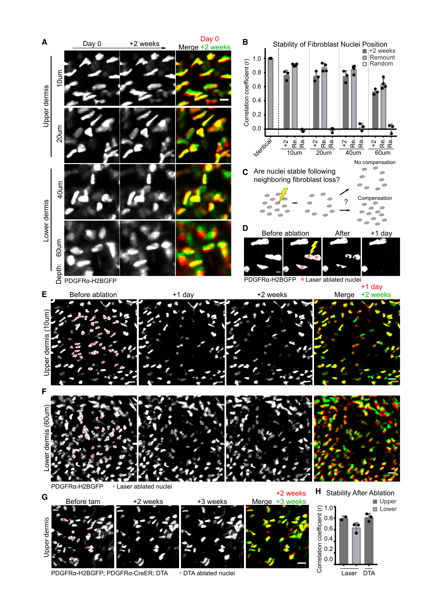
(A) 皮肤真皮的重访（revisits）成像。第 3 列为第 0 天（day 0）与 +2 周（+2 weeks）的叠加图（overlay）。n = 3 只小鼠。定量结果见 (B)（+2）。比例尺，10 μm。
(B) “Identical”（r = 1.0）为图像与其自身比较的相关系数。+2，第 0 天与 +2 周的相关系数（如 A 所示）。Re.，同一位置两次重新固定（remounts）之间的相关系数（阳性对照，pos ctrl）。Ra.，同一深度下随机图像之间的相关系数（阴性对照，neg ctrl）（详见 STAR★Methods）。正相关表示信号之间高度重叠；零相关表示随机重叠。误差线为标准差（SD）。2 周数据 n = 3 只小鼠；重固定（remount）n = 4 个区域；随机（random）n = 3 个区域。
(C) 实验方案及两种可能的结果示意图。
(D) 单细胞激光消融（single-cell laser ablation）的重访成像（详见 STAR★Methods）。损伤表现为光漂白（photo-bleached）方块。图中显示了 3 个被逐一消融的细胞核（粉色圆点），1 天后消失。比例尺，5 μm。
(E) 上层真皮激光消融（粉色圆点）前后的重访成像。+1 天，被消融细胞消失。+2 周，剩余细胞核位置基本保持稳定，缺失区域未被填补，成纤维细胞数量仍处于减少状态。定量结果见 (H)（laser, upper）。n = 3 只小鼠。比例尺，20 μm。
(F) 下层真皮激光消融前后的重访成像。+2 周，剩余细胞核位置基本保持稳定，与 (A) 和 (B) 中同等深度下的情况相似。定量结果见 (H)（laser, lower）。n = 3 只小鼠。比例尺，20 μm。
(G) 遗传诱导消融（genetically inducible ablation）的重访成像。给予低剂量他莫昔芬（tamoxifen）后，随机细胞（粉色细胞核）表达 DTA 并死亡。Before tam，给药前的上层真皮。+2 周和 +3 周，相应时间点的同一区域。在无他莫昔芬的情况下也会以基础速率发生一定程度的重组（详见 STAR★Methods），且在 +2 周至 +3 周之间仍有部分细胞持续丢失（合并图中的纯红色细胞）。定量结果见 (H)（DTA, upper）。n = 3 只小鼠。比例尺，20 μm。
(H) (E)–(G) 中数据在 +1 天与 +2 周（激光消融）之间，或 +2 周与 +3 周（DTA 消融）之间于上层和下层真皮的图像相关系数。图像相关系数与未受干扰组织 (B) 中的图像相关系数相似。误差线为 SD。每个柱状图 n = 3 只小鼠。
成纤维细胞膜主动维持对真皮空间的高占据率（Fibroblast Membranes Actively Maintain High Occupancy of Dermal Space）
先前的研究表明，皮肤成纤维细胞彼此接触，从而在整个真皮中形成一个庞大的网络（Langevin et al., 2004）。因此，为了更好地理解在观察成纤维细胞核时为何未见到明显反应，我们接下来试图研究单个标记成纤维细胞的细胞膜。为此，我们利用了一种可诱导的 Cre 依赖性荧光报告系统（PDGFRα-CreER; Rosa26-loxP-membraneTomato-(stop)-membraneGFP (mTmG)）（Muzumdar et al., 2007），并通过调节他莫昔芬（tamoxifen）剂量来区分单个成纤维细胞。我们观察到成纤维细胞呈极化形态（polarized），在 XY 平面上的面积大于 XZ 平面（Figure 2A）。在 2 周的时间内追踪单个细胞的细胞膜，我们观察到细胞形态和位置总体上是稳定的，与我们对成纤维细胞核的发现相似（Figures 2A, 1A, and 1B）。然而，我们注意到在较小尺度上存在细胞膜的变化，因此试图进一步探究这些变化的动态过程。延时摄影（time-lapse recordings）显示，成纤维细胞膜是高度动态的，其突起（protrusions）会从相对稳定的细胞体（cell body）上迅速伸长和回缩（Figures 2B and 2C；Videos S2 和 S3）。虽然细胞周缘的某些区域更为活跃，但所有区域均表现出一定程度的运动（Videos S2 和 S3）。综上所述，当在完整小鼠的原生环境（native environment）中观察时，皮肤成纤维细胞虽然在整体位置上保持稳定，但具有高度动态的细胞膜。
为了进一步理解成纤维细胞网络如何占据真皮空间，我们将细胞核标记与高剂量他莫昔芬相结合，以诱导最大程度的膜标记（PDGFRα-H2BGFP; PDGFRα-CreER; mTmG）。通过这种方法，我们发现 98.2% ± 1.0% 的细胞发生了膜标记重组（Figure S2B）。利用这种标记，我们发现上层真皮成纤维细胞占据了该真皮区域的 77% ± 1.5% SEM（标准误）（Figures 2D and 2G）。鉴于成纤维细胞膜的动态特性，我们想知道这种对真皮空间的膜占据（membrane occupancy）是否是被主动维持的（actively maintained）。为此，我们试图在成纤维细胞内条件性敲除肌动蛋白细胞骨架重塑 GTP 酶（actin cytoskeletal remodeling GTPase）Rac1（PDGFRα-H2BGFP; PDGFRα-CreER; mTmG; Rac1−/− 或 Rac1+/−）（Glogauer et al., 2003）。使用高剂量他莫昔芬同时实现最大程度膜标记和 Rac1 敲除（Figure S2C），我们观察到 3–4 个月后，与 Rac1+/− 或背景品系对照小鼠相比，Rac1−/− 小鼠的膜占据率显著降低，而成纤维细胞核密度（nuclear density）没有变化（Figures 2E–2G 和 S2D）。综上所述，这些数据表明成纤维细胞膜通过 Rac1 依赖性机制主动维持对很大一部分真皮空间的占据。
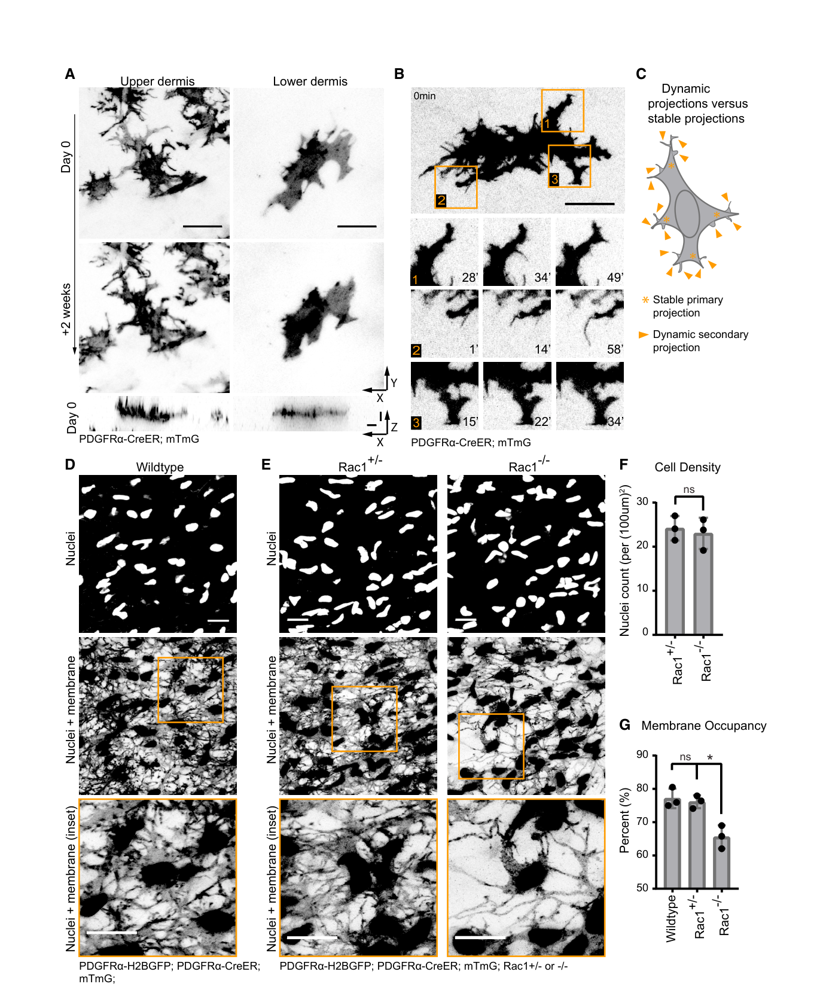
(A) 活体小鼠足底真皮中单个膜-GFP（membrane-GFP）标记成纤维细胞的重访成像（灰度图；非灰度图见 Figure S2A）。图像为约 5 μm 厚 Z 轴堆栈（Z stacks）的叠加图。n = 3 只小鼠。XY 比例尺，20 μm；XZ 比例尺，5 μm。
(B) 上层真皮膜-GFP 成纤维细胞延时摄影的帧图（完整视频见 Video S2）。延时摄影中的分钟数（'）标注于橙色方框放大图右下角。比例尺，20 μm。n = 来自 3 只小鼠的 3 段视频。
(C) 对 (A) 和 (B) 的观察总结。初级突起（primary projections，*）随时间保持稳定，而次级突起（secondary projections，箭头/arrowhead）呈动态变化。
(D) 上层真皮中成纤维细胞核（上）、细胞核 + 细胞膜（中）及放大插图（下）的图像。
PDGFRα-H2BGFP 标记所有成纤维细胞核。通过 CreER 重组 mTmG 在 98.2% ± 1.0% 的细胞中诱导膜标记（Figure S2B）。图像为 10 μm 的最大强度投影（max projections）。n = 3 只小鼠。定量结果见 (G)。比例尺，20 μm；放大插图比例尺，20 μm。(E) 高剂量他莫昔芬处理后 3–4 个月时，
Rac1+/−（左）与 Rac1−/−（右）成纤维细胞的细胞核（上）、细胞核 + 细胞膜（中）及放大插图（下）。Rac1+/− n = 3 只小鼠，Rac1−/− n = 3 只小鼠。定量结果见 (G)。比例尺，20 μm；放大插图比例尺，20 μm。(F)
Rac1+/− 与 Rac1−/− 之间的细胞核密度比较。数据采样自约 500 × 500 μm 区域。误差线为 SD。每个柱状图 n = 3 只小鼠。(G)
Rac1+/− 与 Rac1−/− 之间的膜覆盖率（membrane coverage）比较，通过对 GFP 信号进行阈值分割（thresholding）计算得出（详见 STAR★Methods）。Rac1+/− 与 Rac1−/− 之间 p = 0.0101。误差线为 SD。每个柱状图 n = 3 只小鼠。
动态膜活动为邻近成纤维细胞丢失提供代偿机制（Dynamic Membrane Activity Provides Compensation Mechanism for Loss of Fibroblast Neighbors）
为了检测在邻近细胞丢失期间成纤维细胞膜的活动，我们使用了联合核标记与最大程度膜标记的小鼠（PDGFRα-H2BGFP; PDGFRα-CreER; mTmG），并通过激光消融清除细胞（Figure 3A）。在 2 周的重访过程中，我们观察到邻近细胞核保持位置稳定，与我们之前的观察结果一致（Figures 3B, 1E, and 1H）。令人震惊的是，我们看到被消融区域内含有细胞膜，其占据空间的程度与细胞清除前相似（Figures 3B and 3C）。已有研究表明，细胞在失去细胞核后仍可存活并迁移一段时间（Graham et al., 2018）。为了检验濒死细胞的活性膜是否会在皮肤真皮中随时间持续存在，我们对单个标记细胞进行了细胞消融，观察到其细胞膜在一天之内便消失了（Figure S3A）。这表明这些细胞膜必定来源于存活的邻近细胞。我们想知道新的细胞膜是否占据与原有细胞膜相同的位置，但将消融前与消融后 2 周的图像叠加后显示，新的细胞膜位于不同的位置（Figure S3B）。
这提示邻近成纤维细胞能够利用膜动态（membrane dynamics）在不恢复细胞数量的情况下延伸并占据被清除细胞留下的空间。为了捕捉这一现象的发生过程，我们保持对所有细胞的核标记，但采用更稀疏的膜标记（sparser membrane labeling）。清除未带膜标记的成纤维细胞使我们能够捕捉到新的膜标记延伸进入缺失区域的过程。首先，我们在清除成纤维细胞后进行了短间隔重访，观察到带标记的邻近细胞向细胞丢失区域伸出长长的膜延伸（Figure 3D）。其次，受到体外划痕实验（in vitro scratch assays）的启发，我们识别并消融了两侧均被膜标记细胞夹持的未带膜标记细胞。通过这种设计，我们能够清晰地捕捉到邻近成纤维细胞向细胞丢失区域投射出新的延伸结构（Figure 3E）。最后，为了检验这种代偿是否由 Rac1 介导，我们在用他莫昔芬诱导 Rac1 敲除 2 周后进行了激光消融（PDGFRα-H2BGFP; PDGFRα-CreER; mTmG; Rac1−/− 或 Rac1+/−）。我们观察到 Rac1−/− 成纤维细胞无法形成膜延伸，而 Rac1+/− 小鼠的反应与背景品系相似（Figures 3F and 3G）。这些数据表明，成纤维细胞在保持位置稳定性的同时，通过 Rac1 依赖性机制将细胞膜延伸进入缺失区域，从而代偿邻近成纤维细胞的丢失。
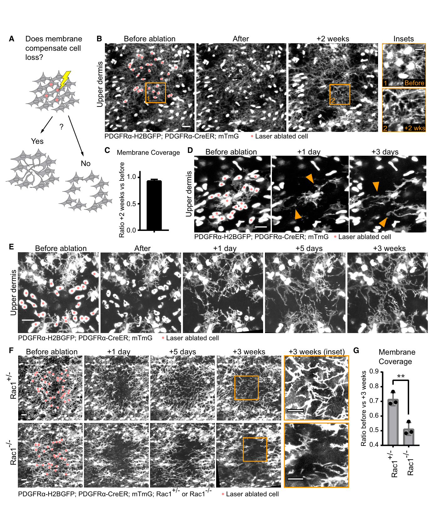
(A) 检测细胞膜对细胞丢失反应的实验方案。
(B) 高剂量他莫昔芬膜标记条件下的激光消融与重访成像。激光消融的细胞核（粉色圆点，消融前）。+2 周时，被消融区域仍缺乏细胞核，但被细胞膜填满。消融前与 +2 周的膜占据率相似（放大插图 1 和 2）。定量结果见 (C)。比例尺，20 μm；插图比例尺，10 μm。
(C) +2 周与消融前绿色信号（膜-GFP + 核 H2B-GFP）面积的比值（93%）。误差线为标准误（SE）。n = 3 只小鼠。
(D) 消融靠近膜-GFP 标记细胞的未标记膜细胞后的短间隔重访。箭头（arrowheads）指示伸入细胞缺失空间的膜延伸。
(E) 对未标记膜细胞（粉色圆点）进行激光消融并对带标记邻近细胞进行重访。来自邻近细胞的细胞膜持续延伸进入消融区域直至 +5 天，并在 +3 周时依然存在。n = 3 只小鼠。比例尺，20 μm。
(F) 高剂量他莫昔芬给药（Rac1 与 mTmG 均达到最大重组）后 2 周进行激光消融，对
Rac1+/−（上）和 Rac1−/−（下）进行重访。Rac1+/− 与野生型 (E) 相似地重新占据了消融区域，而 Rac1−/− 则未能做到。放大插图（最右栏）展示了 +3 周时高亮区域的细节。Rac1+/− n = 3 只小鼠，Rac1−/− n = 3 只小鼠。定量结果见 (G)。比例尺，20 μm；插图比例尺，20 μm。(G) 在
Rac1+/− 或 Rac1−/− 成纤维细胞小鼠中，以消融区为中心的 120 × 120 μm 区域在消融前后的膜占据率比值。每列 n = 3 只小鼠。p = 0.0049。误差线为 SD。
在较大规模损伤后，膜延伸与已知的修复行为相结合（Membrane Extensions Are Incorporated with Known Repair Behaviors following Larger Damage）
我们发现成纤维细胞在邻近细胞丢失后利用膜延伸而非增殖和迁移来重新占据空间，这促使我们检验在更大规模损伤的背景下这些行为的组合方式（Figure 4A）。我们采用了两种不同的实验方法。首先，我们提高了激光消融的强度，使其在清除成纤维细胞的同时损伤胶原蛋白（collagen，通过二次谐波信号 second harmonic signal 可视化）（Figure 4B）。在我们捕捉到成纤维细胞位置变化（很可能是由增殖和/或迁移事件引起）的同时，我们还注意到在修复过程中伴随着膜延伸的同步发生（Figures 4B and 4C）。
其次，我们通过改进先前使用的可诱导 Cre 依赖性白喉毒素系统（PDGFRα-CreER; Rosa26-loxP-eGFP-(stop)-DTA）来特异性靶向成纤维细胞，从而大幅增加成纤维细胞的丢失。这一组合导致上层真皮出现更高外显率（higher penetrance）的细胞丢失，而在下层真皮中仅检测到极少的细胞丢失（Figures 4D and 4F；详见 STAR★Methods）。在大规模细胞缺失之后，我们观察到到第 2 周时上层真皮区域出现了部分再定植（partial repopulation）（Figures 4D and 4F）。将该组织持续追踪至第 6 周，我们看到几乎没有进一步的再定植，使最靠近表皮的区域仍然缺乏细胞（Figures 4D and 4F）。我们在存在和不存在细胞核信号的条件下检查了这片剩余空间，观察到虽然这一表皮下区域（sub-epithelial region）缺乏成纤维细胞核，但它包含从下方绝大多数成纤维细胞垂直向上伸出的膜延伸（Figures 4E, 4G, S4B, and S4C）。在激光消融之后也观察到了这种垂直膜延伸（vertical membrane extensions）（Figure S4D）。尽管成纤维细胞在 XY 平面上具有强烈的极性（Figure 2A），但它们能够垂直延伸细胞膜的能力进一步拓展了我们对其膜动态的理解。这些数据表明，成纤维细胞膜延伸与已知的修复行为协同工作，提供了一种无论单独作用还是协作发挥、均能使成纤维细胞组织在体内介导空间再占据（space reoccupation）的机制。
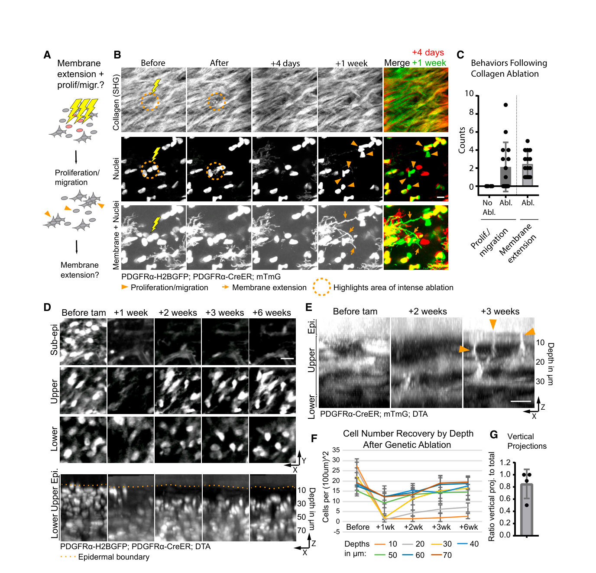
(A) 对细胞核及其周围胶原蛋白进行激光消融（粉色细胞核 + 3 个闪电符号），引发增殖和迁移行为，并对同步发生的膜延伸进行评分统计。
(B) 成纤维细胞清除 + 胶原损伤性消融（虚线圈以及顶部的二次谐波信号）及重访成像。中行和底行均为绿色通道，但调整了亮度以分别显示较强的核 GFP 信号或较弱的膜-GFP 信号。定量结果见 (C)。n = 来自 4 只小鼠的 15 次消融。比例尺，10 μm。短箭头（arrowheads）指示增殖或迁移；长箭头（arrows）指示膜延伸。
(C) 胶原损伤性消融（Abl.）或非胶原损伤对照（No Abl.）后的增殖和/或迁移（15 例中的 8 例）以及膜延伸（15 例中的 15 例）。n = 来自 4 只小鼠的 15 次消融和 4 例非胶原损伤对照。
(D) 广泛遗传消融成纤维细胞（DTA）后的重访成像。高剂量他莫昔芬处理后至 +1 周，上层成纤维细胞近乎完全丢失。至 +2 周，上层真皮细胞数量部分恢复，但即使在 +6 周，表皮下（sub-epithelial）细胞数量仍未恢复。定量结果见 (F)。n = 3 只小鼠。比例尺，20 μm。Epi，表皮（epidermis）。
(E) 高剂量 DTA 条件下突出显示成纤维细胞膜的 XZ 投影重访成像。消融前（左），表皮下区域可见细胞体。高剂量他莫昔芬处理后（中、右），表皮下区域仍缺乏细胞体。在 +3 周时，垂直膜突起（vertical membrane projections）从更深层的细胞伸出并与表皮接触。定量结果见 (G)。n = 来自 3 只小鼠的 28 个细胞。比例尺，10 μm。Epi，表皮。
(F) 消融前，成纤维细胞密度随深度变化，介于约 13 至 30 个细胞/（100 μm）2。+2 周时，30 μm 深度处的成纤维细胞密度基本恢复（黄色）。10 μm（橙色）和 20 μm（浅灰色）深度处的细胞密度在 +6 周时仍未恢复。n = 3 只小鼠。
(G) 在 +3 周时，对位于约 30 μm 深度处的膜-GFP 标记细胞统计是否存在延伸至表皮的膜延伸（85%）。误差线为 SD。n = 来自 3 只小鼠的 28 个细胞。
位置稳定性与膜占据行为在非重塑有毛皮肤中得以维持（Positional Stability and Membrane Occupancy Behaviors Are Maintained in Non-remodeling Hairy Skin）
为了检验细胞丢失后位置稳定性和膜延伸原则的普适性（generality），我们转向在更复杂的皮肤组织中测试这些行为。耳尖（ear tip）是一个有毛区域，由于处于活跃生长和退缩期的毛囊较为罕见，其真皮结构保持稳定（Figure 5A，左；Video S4）。与无毛足底相比，该区域的成纤维细胞具有相似的膜占据率，但细胞核密度较低且细胞体积较大（Figures S5A–S5C）。对同一批成纤维细胞核进行长达 2 周的重访显示，这些细胞保持了稳定的位置，与我们在无毛足底皮肤中观察到的一样（Figure 5B）。为了定量这些结果，我们采用了与 Figures 1B and 1H 中相同的图像相关技术（Figure 5G）。将 Figure 1B 中重新固定（remounted）的组织与 Figure 5G 中的重固定（阳性对照）进行比较，我们看到耳部的相关性低于足底，这表明耳部组织在技术性固定（mounting）过程中对拉伸和凹凸不平更为敏感。比较 2 周重访与重固定的相对相关系数，我们发现在 2 周时间内，无毛足底皮肤与有毛耳部皮肤之间细胞核的移动程度是相同的（Figure 5G 对比 Figure 1B）。
为了检验在面临邻近成纤维细胞丢失时这种稳定性是否依然保留，我们在有毛耳部皮肤中对成纤维细胞进行了激光消融，并观察到位置稳定性在 2 周内得以维持（Figures 5C and 5G），与我们在无毛足底中的发现相似。此外，嵌合式膜标记（mosaic membrane labeling）结合激光消融捕捉到，这些成纤维细胞同样能够利用膜延伸来重新占据空间（Figure 5D）。因此，成纤维细胞的位置稳定性和膜延伸原则在不同的皮肤组织类型中是保守的。
位置稳定性在生理性真皮重塑期间丧失（Positional Stability Is Lost during Physiological Dermal Remodeling）
我们在有毛皮肤中发现成纤维细胞遵循稳定性和膜占据原则，这促使我们进一步探究在活跃重塑的真皮（actively remodeling dermis）中成纤维细胞的行为（Figure 5A，右）。在毛发生长期（hair growth phase / anagen）启动期间，毛囊向真皮内延伸，其长度增加数倍（Müller-Röver et al., 2001）。我们从这一生长期启动之初开始，并在随后的 2 周内持续捕获成纤维细胞的细胞核（Figures 5E and 5G）。我们观察到，在 1 周时仍有少数细胞核保持在原位，但到 2 周时绝大多数已偏离了初始位置。该区域的重固定所显示的图像相关系数远低于非重塑有毛皮肤或无毛足底皮肤的重固定，表明其对组织固定过程中的微小差异具有更高的敏感性（Figure 5G）。然而，与重固定相比，2 周内细胞核的相对移动程度远大于非重塑有毛皮肤或无毛足底皮肤，这表明在组织重塑期间确实发生了成纤维细胞的真实移动。这种移动在多大程度上是由生长中毛囊引起的真皮物理形变（physical deformation）（Figure 5A，右，第 0 天对比 +2 周）所致，又在多大程度上是由改变成纤维细胞行为的信号通路差异所致，目前尚不清楚。
最后，我们在重塑中的有毛皮肤内进行了激光消融。我们观察到被消融区域被新出现的成纤维细胞核重新定植，同时伴随着膜网络的重组（reorganization）（Figures 5F 和 S5D）。综上所述，我们发现处于活跃物理变化中的皮肤无法维持位置稳定性。
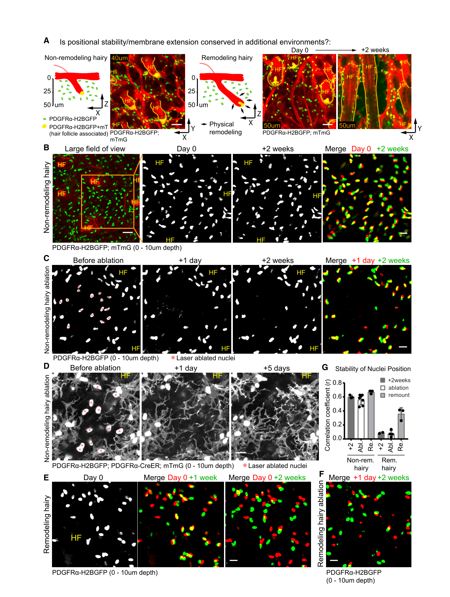
(A) 示意图为 XZ 投影，显微图像为 40 μm（非重塑）和 50 μm（重塑）深度处的 XY 投影。非重塑有毛组织在 2 周内不发生变化。在重塑有毛组织中，毛囊在 2 周内伸长。HF，毛囊（hair follicle），以橙色轮廓标出。完整 Z 轴堆栈见 Videos S4 和 S5。比例尺，50 μm。
(B) 稳态非重塑有毛皮肤的重访成像。第 1 列展示包含绿色（
PDGFRα-H2BGFP）和红色（membrane-tdTomato）通道的宽视野图。第 0 天、+2 周和合并图（merge）为第 1 列中橙色方框高亮的区域。n = 3 只小鼠。定量结果见 (G)（Non-rem. hairy, +2）。比例尺，50 μm（第 1 列）；20 μm（第 2–4 列）。(C) 激光消融（粉色圆点）及重访成像。+1 天，被消融细胞消失。+2 周，剩余细胞核基本保持稳定，且细胞数量仍处于减少状态。定量结果见 (G)（Non-rem. hairy, Abl.）。n = 3 只小鼠。比例尺，20 μm。
(D) 带膜-GFP 成纤维细胞标记的消融后重访成像。来自邻近标记细胞的细胞膜延伸进入消融区域。n = 3 只小鼠。比例尺，20 μm。
(E) 重塑有毛皮肤的重访成像。成纤维细胞核以灰度图（第 0 天）或合并图（中、右）呈现。n = 3 只小鼠。定量结果见 (G)（Rem. hairy, +2）。比例尺，20 μm。
(F) 重塑有毛皮肤消融后 +1 天与 +2 周的合并图。观察到成纤维细胞核几乎没有重叠。n = 3 只小鼠。定量结果见 (G)（Rem. hairy, Abl.）。比例尺，20 μm。
(G) (B)（Non-rem. hairy, +2）、(C)（Non-rem. hairy, Abl.）、(E)（Rem. hairy, +2）和 (F)（Rem. hairy, Abl.）所示数据的图像相关系数。与 Figures 1B and 1H 比较。Non-/rem，非重塑/重塑；Re，重固定（remount）；+2，未受干扰的 2 周；Abl，消融。非重塑有毛皮肤阳性对照相关系数（0.671）低于无毛皮肤的重固定（Figure 1B，10 μm，Re.，0.905），表明该组织预期的最大相关性较低。重塑有毛皮肤重固定阳性对照相关系数更低（0.360），接近该分析方法的极限。误差线为 SD。2 周时间进程数据 n = 3 只小鼠；重固定 n = 3 个区域。
衰老过程中的成纤维细胞丢失以逐步累积的稳定簇形式发生，并由细胞膜代偿（Fibroblast Loss during Aging Occurs in Progressively Accumulating Stable Clusters Compensated by Membrane）
我们在非重塑皮肤中观察到的成纤维细胞位置稳定性，促使我们探究这一行为在衰老过程（aging process）中的意义，因为已知在年老个体中成纤维细胞密度会降低（Andrew et al., 1964–1965）。为此，我们在无毛足底皮肤和非重塑有毛皮肤中对成纤维细胞核进行了可视化，并将年轻小鼠与两组较年长小鼠（8–10 月龄，以及 16 月龄及以上）进行了比较（Figures 6A–6C）。令人震惊的是，与较年长小鼠中细胞密度均匀下降不同，我们观察到了高度局部化的细胞丢失簇（localized clusters of cell loss）。每一个丢失簇在组织结构上都与我们用来干扰成纤维细胞稳态的激光消融所造成的空洞相似（Figures 1, 3, and 5）。这与年轻（2 月龄）小鼠中细胞核在整个组织中均匀分布的排布形成了鲜明对比（Figures 6A 和 S6A）。鉴于这些空隙（gaps）的大小和形状存在异质性，为了更严格地定量空隙的数量，我们使用 MATLAB 脚本，基于 Imaris 软件确定的细胞核位置生成了泰森多边形图（Voronoi diagrams，详见 STAR★Methods）。除了用于定量之外，这些图像还为这些空隙的局部化特性提供了直观的可视化展示（Figure 6A，右）。来自三个不同年龄队列的定量结果显示，空隙数量随年龄增长而增加（Figure 6B）。这种随年龄出现的局部成簇成纤维细胞丢失也在非重塑有毛皮肤中被观察到（Figures S6A–S6C）。最后，为了进一步探究这一点，我们统计了深达 40 μm 范围内的成纤维细胞密度，发现在这一更宽的真皮深度范围内，细胞丢失比单独的上层成纤维细胞发生得更早（Figure 6C）。
为了检验年长个体中空隙数量的增加是由持续的细胞丢失与替换所致，还是由不伴随替换的渐进性丢失（progressive loss without replacement）所致，我们在已经存在空隙的小鼠中进行了长达 5 个月的重访（Figures 6D 和 S6E）。通过这种方法，我们既捕捉到了新空隙的出现（Figure 6D，右上插图），也捕捉到了已有空隙的持续存在（Figure 6D，右下插图）。在这两种情况下，空隙周围的细胞核在 5 个月内均保持稳定，其移动幅度大致与 2 周时间段内一样微小（Figure 1A 对比 Figure 6D）。这揭示了随衰老发生的成纤维细胞密度下降并非均匀的细胞丢失，而是由于成纤维细胞的位置稳定性而未能恢复的局部细胞丢失的累积。
最后，为了探究这些空隙内部的细胞膜分布，我们回到联合核标记与最大程度膜标记的小鼠品系（PDGFRα-H2BGFP; PDGFRα-CreER; mTmG）。我们在 8 月龄以上小鼠的细胞核排布中再次观察到空隙，并发现这些空隙内含有密度与非空隙区域相似的成纤维细胞膜（Figures 6E, 6F, 和 S6D）。我们还定量了较年长小鼠的整体膜占据率，发现其占据水平与年轻小鼠相似（Figure 6G 对比 Figure 2G），这进一步支持了即使进入衰老组织，膜占据率依然得以维持。总之，我们发现，在衰老过程中，成纤维细胞丢失是以局部丢失簇的累积形式发生的，而非密度的均匀下降。此外，与我们的激光消融模型一样，紧邻这些空隙的成纤维细胞未能恢复细胞数量并保持位置稳定，但通过膜延伸维持了对该空间体积的膜占据（Figure 6H）。
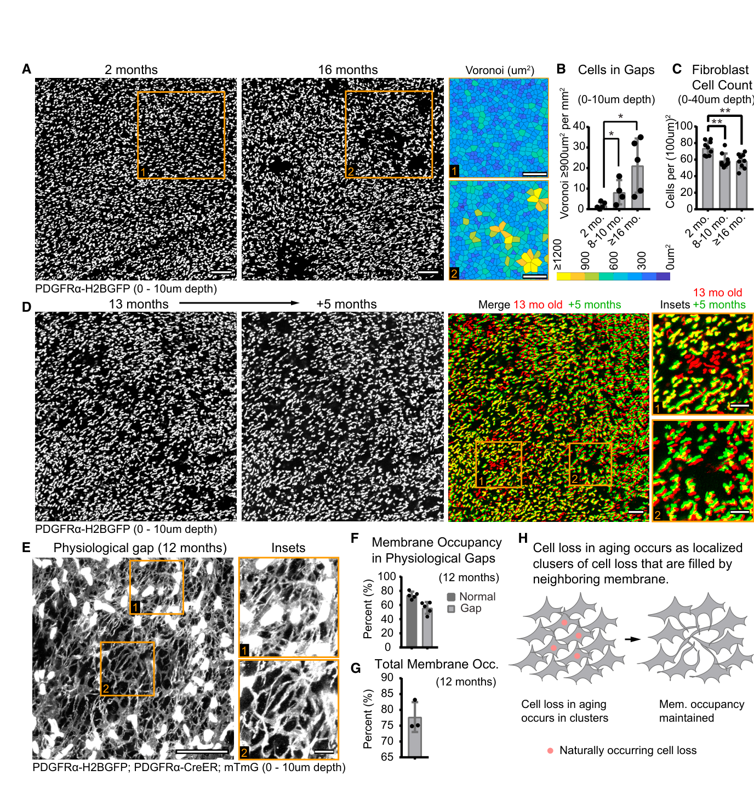
(A) 2 月龄小鼠（第 1 列）和 ≥16 月龄小鼠（第 2 列）无毛足底皮肤的成纤维细胞核。在 Voronoi 图（上：2 月龄；下：≥16 月龄）中，多边形按面积大小进行颜色编码。每个年龄组 n = 5 只小鼠。比例尺，100 μm。
(B) 在上层真皮 1,000 × 1,000 × 10 μm 区域（约 2,500 个细胞）中采样的、Voronoi 图中细胞面积超过 900 μm2 的数量。每只小鼠取 1 个样本。n = 5 只小鼠（2 月龄）；n = 4 只小鼠（8–12 月龄）；n = 5 只小鼠（≥16 月龄）。p = 0.0499（2 月龄对比 8–10 月龄）；p = 0.0114（2 月龄对比 ≥16 月龄）。误差线为 SD。
(C) 各年龄组小鼠皮肤真皮中随机采样 200 × 200 × 40 μm 区域的细胞密度。p = 0.0018（2 月龄对比 8–10 月龄）；p = 0.0016（2 月龄对比 ≥16 月龄）。误差线为 SD。每个年龄组 n = 3 只小鼠。
(D) 从已存在空隙的皮肤开始进行的跨越 5 个月的皮肤重访成像。合并图（Merge）中的纯红色信号代表在 5 个月期间消失的细胞核。细胞以局部细胞丢失簇的形式消失，而非在整个皮肤中均匀消失。放大插图（第 4 列）突出显示了在 5 个月期间（上，1）及之前（下，2）发生的局部细胞丢失簇示例。定量结果见 Figure S6E。比例尺，100 μm；插图比例尺，50 μm。
(E) 自然发生的局部细胞丢失簇图像，以灰度突出显示膜-GFP 成纤维细胞标记。放大插图突出显示了正常细胞核排布区域（上，1）和细胞核缺失区域（下，2）。定量结果见 (F)。比例尺，50 μm；插图比例尺，10 μm。
(F) 12 月龄小鼠中正常细胞核区域与空隙区域之间的膜占据率，通过对 GFP 信号进行阈值分割计算得出（详见 STAR★Methods）。与 Figure 2G 比较。误差线为 SD。每个柱状图 n = 3 只小鼠。
(G) 含有空隙的小鼠中随机采样 200 × 200 × 10 μm 区域的膜占据率。与 Figure 2G 比较。误差线为 SD。n = 3 只小鼠。
(H) 衰老过程中细胞丢失的模型。细胞以局部簇的形式丢失，其大小和形状与我们的激光消融实验相似。与激光消融后类似，紧邻生理性细胞丢失区域的细胞核保持位置稳定，但向该区域投射出新的膜延伸。
讨论（DISCUSSION）
器官功能依赖于不同组织类型的关键细胞行为。然而，在体内维持稳态的原则究竟是什么一直难以捉摸。成纤维细胞是存在于我们大多数器官中的一种细胞类型。尽管成纤维细胞在全身广泛存在且发挥着核心作用，但人们一直难以阐明它们如何驻留并维持其组织，这部分是由于无法在活体未受伤的哺乳动物中随时间推移追踪相同的细胞。在此，我们通过利用活体成像（intravital imaging）克服了这一难题，在活体小鼠中直接追踪并操纵了皮肤成纤维细胞。本研究阐明了位置稳定性（positional stability）和空间占据（space occupancy）是调控体内成纤维细胞稳态的核心原则。此外，我们鉴定出不伴随细胞迁移的动态膜延伸（dynamic membrane extension, in the absence of cell migration）作为一种机制，在保持这种位置稳定性的同时，使空间占据得以作为皮肤稳态的一项终身原则发挥作用。
成纤维细胞的一项公认功能是细胞外基质（extracellular matrix, ECM）的生成与维持（Kalson et al., 2013）。我们观察到的稳定性提示，这种维持可能是通过将真皮细分为由每个驻留细胞持久管辖的小区域（small zones of persistent ownership）来实现的。除了位置稳定性之外，成纤维细胞还利用其细胞膜维持对真皮的高占据率，从而形成一个先前已通过组织学（histology）观察到的稳定细胞间接触网络（Langevin et al., 2004）。我们现在看到，成纤维细胞在面对细胞丢失时会努力维持这一网络。这一成纤维细胞网络可能使其能够充当其他细胞的稳定支架（stable substrate），就像脾脏中的成纤维网状细胞网络为淋巴细胞提供的支持一样（Bajénoff et al., 2008）。这些连接还可能促进直接邻近细胞与较远邻近细胞之间的旁分泌通讯（paracrine communication），从而对组织稳态产生深远影响（Sanders et al., 2013; Inaba et al., 2015; Zhou et al., 2018; Adler et al., 2018）。成纤维细胞能够延伸其细胞膜的覆盖范围，这也提示调节细胞大小在能量消耗上可能比增殖和迁移更为经济，并且足以维持对假定 ECM 区域的监视（surveillance）（Abdel-Haleem et al., 2017; Zanotelli et al., 2018）。
在皮肤衰老表型（aging phenotype）的背景下，由细胞丢失和膜延伸所导致的持久性（perdurant）组织结构改变尤其具有启发性。对年轻与年老个体人类皮肤的比较研究曾指出，年老个体的成纤维细胞数量更少，且相比年轻个体拥有更多更长的膜突起（Andrew et al., 1964–1965; Novotny and Gnoth, 1991; Salzer et al., 2018）。我们在年老小鼠中的实验为这一过程增添了重要洞见，表明细胞缺失并非均匀发生，而是以成簇细胞丢失的累积形式发生——这或许是一生中局部细微创伤（localized subtle traumas）被永久镌刻在真皮中的记录。然而，膜延伸是否能够以与均匀排布的成纤维细胞相同的能力来维持皮肤的宏观特性（macroscopic properties）仍有待确定，而更多空隙与皱纹（wrinkles）出现之间的相关性可能提示，单靠膜占据本身并不足够。有趣的是，在临床上人们利用可控的真皮损伤（如点阵激光）来诱导成纤维细胞增殖和迁移，从而缓解某些与年龄相关的皮肤表型（如皱纹）（Manstein et al., 2004）。综合来看，这表明成纤维细胞对细胞数量减少的耐受性促成了皮肤衰老的倾向。或许其他非增殖性（non-proliferative）细胞类型的衰老也会沿着类似的路径演进。
确立成纤维细胞的稳定性原则使我们能够认识到，在生理性重塑的毛囊皮肤中，无需创伤和炎症，位置稳定性便可丧失。这为在没有炎症激活的成纤维细胞所伴随的过度增殖和纤维化（fibrosis）的情况下实现可控的成纤维细胞激活的新通路提供了证据，并且可能与先前描述的在成体中触发新生儿期成纤维细胞行为（neonatal fibroblast behaviors）的通路相似（Collins et al., 2011）。激活这一替代性的成纤维细胞通路，有望为伤口愈合和衰老领域的转化疗法（translational therapies）开辟新途径，以更低的成本和更少的患者不便实现激光疗法的益处，并支持更频繁和更早期的干预。
除了成纤维细胞之间的接触之外，我们在大规模细胞丢失后还捕捉到了从成纤维细胞指向表皮的垂直连接（vertical connections）。在未受干扰的组织中，不仅是垂直延伸，成纤维细胞的整个表面都与表皮相接触。成纤维细胞与上皮细胞的相互作用（fibroblast epithelial interactions）在多种情境中都至关重要，包括肢体发育（limb development）、成体毛囊周期循环（adult hair follicle cycling）以及体外培养中表皮干细胞的生长（Richman and Tickle, 1992; Maas-Szabowski et al., 1999; Werner and Smola, 2001）。成纤维细胞在未受干扰的成体稳态中充当皮肤上皮关键信号中心（critical signaling centers）的模式，也延伸至成体中的其他细胞类型，例如初始 T 细胞（naive T cells）、巨噬细胞（macrophages）和胸腺髓质上皮（medullary thymus epithelium）（Link et al., 2007; Zhou et al., 2018; Sun et al., 2015）。然而，成纤维细胞在体内成体稳态期间支持表皮干细胞命运决定（epidermal stem cell decisions）的作用在很大程度上仍有待探索。由于来自相对较小干细胞的新细胞物质持续流动，稳态表皮行为与成纤维细胞行为截然不同，而这些较小的表皮干细胞恰好夹在两层较大的细胞（上方的分化表皮细胞与下方的成纤维细胞）之间（Wickett and Visscher, 2006）。或许这种行为和尺寸上的多样性在器官层面上支持了稳健性（robustness），类似于复合材料（composite materials，如胶合板或碳纤维），通过将不同性质的材料层夹叠在一起来产生强度（Gibson, 2010）。总体而言，我们在形态和行为截然不同的细胞之间观察到紧密维持的物理连接，这支持了关于它们结构相互作用的既有研究（Charbonneau et al., 2010; Loeys et al., 2010），并为未来研究成纤维细胞在维持表皮稳态中的作用（以及反之亦然）铺平了道路。
总之，这项工作阐明了位置稳定性和空间占据是调控体内成纤维细胞稳态的核心原则，并鉴定出不伴随细胞迁移的膜延伸是实现这些原则的行为机制。这些原则可用于指导未来旨在重现体内环境条件的体外研究设计，并指导未来的体内研究，以探讨这些原则在衰老中的后果，或成纤维细胞在纤维化（fibrosis）和癌症（cancer）等疾病状态下的行为差异。
（注：按照要求，致谢 Acknowledgments、作者贡献 Author Contributions、经费与利益冲突 Declaration of Interests 及参考文献 References 未予翻译。）
STAR★方法（STAR★METHODS）
关键资源表（KEY RESOURCES TABLE）
| 试剂或资源（REAGENT or RESOURCE） | 来源（SOURCE） | 标识符（IDENTIFIER） |
|---|---|---|
| 化学品、多肽与重组蛋白（Chemicals, Peptides, and Recombinant Proteins） | ||
| 他莫昔芬（Tamoxifen） | Sigma-Aldrich | Cat#T5648 |
| 玉米油（Corn oil） | Sigma-Aldrich | Cat#C8267 |
| 杜氏磷酸盐缓冲盐水（Dulbecco's Phosphate Buffered Saline, PBS） | Thermo Fisher | Cat#14190144 |
| 多聚甲醛（Paraformaldehyde, PFA） | Electron Microscopy Sciences | Cat#15714 |
| Triton X-100（曲拉通 X-100） | Sigma-Aldrich | Cat#T8787 |
| 实验模型：生物体/品系（Experimental Models: Organisms/Strains） | ||
小鼠：Pdgfratm11(EGFP)Sor/J | The Jackson Laboratory | JAX: 007669 |
小鼠：Tg(Pdgfra-cre/ERT)467Dbe/J | The Jackson Laboratory | JAX: 018280 |
小鼠：Gt(ROSA)26Sortm4(ACTB-tdTomato,-EGFP)Luo/J | The Jackson Laboratory | JAX: 007576 |
小鼠：Gt(ROSA)26Sortm1(DTA)Jpmb/J | The Jackson Laboratory | JAX: 006331 |
小鼠：Rac1tm1Djk/J | The Jackson Laboratory | JAX: 005550 |
小鼠：CD1 | Charles River | 022 |
| 寡核苷酸引物（Oligonucleotides） | ||
PDGFRαH2BGFP (CCCTTGTGGTCATGCCAAAC, ACGAAGTTATTAGGTCCCTCGAC) | 实验室自行设计（Designed in lab） | N/A |
PDGFRαCreER (TCAGCCTTAAGCTGGGACAT, ATGTTTAGCTGGCCCAAATG) | The Jackson Laboratory | JAX: 018280 |
mTmG (CTGTTCCTGTACGGCATGG, GGAGGAGTAGAATGTTGAGAG) | The Jackson Laboratory / 实验室自行设计 | JAX: 007908 |
DTA (AAAGTCGCTCTGAGTTGTTAT, GCGAAGAGTTTGTCCTCAACC (mut), GGAGCGGGAGAAATGGATATG (wt)) | The Jackson Laboratory | JAX: 006331 |
Rac1-flox (TCCAATCTGTGCTGCCCATC, GATGCTTCTAGGGGTGAGCC) | The Jackson Laboratory | JAX: 005550 |
Rac1-deletion (TCCAATCTGTGCTGCCCATC, CAGAGCTCGAATCCAGAAACTAGTA) | The Jackson Laboratory | JAX: 005550 |
| 软件与算法（Software and Algorithms） | ||
| FIJI (ImageJ) | https://fiji.sc/ | N/A |
| Imaris | Bitplane | N/A |
试剂与资源共享联系（CONTACT FOR REAGENT AND RESOURCE SHARING）
有关资源和试剂的更多信息及索取请求，请直接联系主要联系人（Lead Contact）Valentina Greco（valentina.greco@yale.edu），并由其负责提供。
实验模型与受试对象详情（EXPERIMENTAL MODELS AND SUBJECT DETAILS）
小鼠（Mice）
PDGFRαH2BGFP（Hamilton et al., 2003）、PDGFRαCreER（Kang et al., 2010）、Rosa26-loxP-membraneTomato-(stop)-membraneGFP (mTmG)（Muzumdar et al., 2007）、Rosa26-loxP-eGFP-(stop)-DTA（Ivanova et al., 2005）均购自杰克逊实验室（The Jackson Laboratory）。小鼠在混合 CD1 白化（albino）背景下繁育。本研究使用的小鼠雌雄均有，除衰老实验另有说明外，年龄范围为 1–4 月龄。所有涉及动物受试者的研究与操作均经耶鲁大学医学院实验动物管理与使用委员会（Institutional Animal Care and Use Committee, IACUC）批准，并严格按照经批准的动物操作规程执行。
方法详情（METHOD DETAILS）
活体成像（In vivo imaging）
成像步骤与先前所述相似（Pineda et al., 2015）。小鼠使用气化异氟烷（vaporized isoflurane）麻醉，随后转移至成像载物台，并在整个实验过程中通过鼻罩持续吸入气化异氟烷（1% 异氟烷溶于氧气和空气中）维持麻醉状态。成像期间小鼠置于保温垫上。将小鼠足底或耳部固定于定制载物台上，并将玻璃盖玻片直接贴合其表面。使用配备 Chameleon Vision II（Coherent）双光子激光器（2-photon laser；活体成像采用 940 nm，单细胞及大范围消融均采用 810 nm）的 LaVision TriM Scope II（LaVision Biotec）显微镜，通过 Zeiss 20×/1.0NA、Zeiss 40×/1.1NA 或 Zeiss 63×/1.15NA 水浸物镜（water immersion objective），以 1 μm 或 2 μm 步长采集深达 120 μm 的 Z 轴堆栈（Z stacks）。光学切片的扫描视野为 500 μm2（20×，即 500 × 500 μm）、228 μm2（40×）或 145 μm2（63×）。为了对大面积区域进行成像，利用电动载物台捕获多个拼接视野（tiles，最多达 4×4），并使用 FIJI 脚本将其拼接在一起（详见“数据与软件可用性”）。重访成像（Revisits）：在此类实验中，对活体小鼠皮肤的同一区域在数小时至数月的间隔内进行重复成像。利用解剖特征、血管分布模式（通过 membrane-tdTomato 可视化）或毛囊作为地标（landmarks），以重新定位相同的皮肤位置（血管可视化参见 Figure S1B 和 Video S1）。延时摄影（Time-lapse movies）：在此技术中，活体小鼠在实验期间保持麻醉状态，并以 30 秒至 5 分钟的时间间隔连续采集光学切片。
单细胞激光消融（Single cell laser ablation）
激光消融使用成像激光器的 810 nm 波长和 Zeiss 63×/1.15 水浸物镜完成，将扫描头的视野缩小至单个细胞核边界内约 2 μm2 的区域，根据深度以 8%–40% 的激光功率进行照射，直至红色通道中出现轻微的自发荧光（autofluorescence）为止。参见 Figure 1D。
胶原损伤性激光消融（Collagen damaging laser ablation）
胶原损伤性激光消融使用 810 nm 波长和 Zeiss 63×/1.15 水浸物镜完成，将扫描头的视野缩小至约 10–20 μm2，根据深度以 20%–40% 的激光功率进行照射，直至信号突然且急剧增强为止。
他莫昔芬诱导（Tamoxifen induction）
为了诱导低水平膜-GFP 标记或 DTA 消融，在约 1 月龄时通过腹腔注射（intraperitoneal injection）给予 PDGFRα-CreER; mTmG 或 PDGFRα-CreER; mTmG; DTA 小鼠单次剂量的他莫昔芬（1 mg/kg 体重，溶于玉米油）。为了诱导高水平膜-GFP 标记或消融，在约 1 月龄时通过腹腔注射给予 PDGFRα-CreER; mTmG 或 PDGFRα-CreER; mTmG; DTA 小鼠单次或最多三次剂量的他莫昔芬（60 mg/kg 体重，溶于玉米油）。这会导致 mTmG 和 DTA 两个等位基因均发生重组。然而，这两者的重组是独立事件，重访成像显示部分细胞仅在一个等位基因上发生了重组而在另一个上未发生。我们有时会利用这一特点，例如在 Figure 4E 中，在 DTA 消融之后追踪膜-GFP 信号。对于 PDGFRα-CreER; Rac1 小鼠，在 6 天内给予 3 次 60 mg/kg 体重的他莫昔芬，并在完成他莫昔芬给药至少一周后，通过取材额外组织并进行 PCR 来确认 Rac1 重组（Figure S2C）。由于始终期望达到最大程度的 Rac1 重组，且实验分组取决于 Rac1 loxP 等位基因的杂合性或纯合性，因此始终给予相同的最大他莫昔芬剂量。由此，所有 Rac1 实验同时也具有最大程度的 mTmG 重组。在不注射他莫昔芬的情况下，也可观察到基础水平的膜-GFP 标记或 DTA 消融诱导。在 PDGFRα-CreER; DTA 小鼠中，基础水平的重组及 DTA 介导的细胞死亡以大约每周每 100 个细胞中 5 个细胞的速率发生。我们注意到，在 mTmG 和 DTA 等位基因以及我们尝试过的其他等位基因中，PDGFRα-CreER 均优先在上层成纤维细胞而非下层成纤维细胞中诱导重组。我们对敲入报告小鼠 PDGFRα-H2BGFP（我们认为它忠实反映了内源性 PDGFRα 表达）进行了冰冻切片（cryosections），观察到上层成纤维细胞中的信号强于下层成纤维细胞（Figure S4A），这可能导致了 Figure 4D 中所见这两层之间 PDGFRα-CreER 介导重组的差异。此外，PDGFRα-CreER 品系的转基因特性（多个随机插入位点及不同的启动子背景）也可能导致外显率（penetrance）的差异，这在该领域使用的其他转基因荧光和 CreER 品系中也经常出现。
通过二次谐波信号（SHG）可视化胶原蛋白（Visualization of collagen via second harmonic signal (SHG)）
各图中胶原蛋白的可视化得益于双光子显微镜的使用。某些分子（如胶原蛋白）在双光子照射下，无需任何外源标记即可发射波长为入射光波长一半的光子（使用 940 nm 成像波长时通常在蓝色通道中捕获），这一现象称为二次谐波产生（second harmonic generation, SHG）。
图像分析（Image analysis）
原始图像堆栈导入 FIJI（ImageJ, NIH）进行分析。使用单个光学平面、或连续光学切片的求和/最大强度 Z 投影（summed or max Z stacks）来组装图片。跨重访时间点的图像配准（alignment）使用 Imaris（BitPlane）完成。Voronoi 图及相关分析使用 MATLAB 脚本生成（详见“数据与软件可用性”）。
相关系数计算（Correlation coefficient calculations）
计算两幅图像之间的图像相关系数（image correlation coefficients），以比较两幅图像之间的相似度。完全相同的图像会产生 r = 1.0 的图像相关系数（更多示例见 Figure S1C）。作为与细胞层面运动无关的组织移动（例如固定时皮肤的拉伸，或用于固定皮肤的凝胶表面的凹凸不平）的技术对照，使用了“重固定”（remounts，缩写为“Re.”）：即先捕获初始图像，让小鼠苏醒，随后在 1 小时内重新固定小鼠并拍摄第二张图像，再与第一张图像进行比较。这是我们的阳性对照。足底皮肤重固定的图像相关系数通常高于耳部皮肤，这可能是因为耳部更容易被拉伸，或在载物台上可能以不同角度放置，或者毛囊可能落在不同位置从而以不同方式遮挡组织。作为阴性对照，将图像与同一深度下不同位置的图像进行比较，缩写为“Ra.”（代表随机，random）。正的图像相关系数被解释为信号之间高度重叠；负相关被解释为一幅图像中的信号与第二幅图像中信号的缺失相关；零相关表示无相关性（两幅图像之间 50% 的信号重叠，50% 的信号不重叠）。图像相关性的计算通过运行在 FIJI 中的 Python 脚本模块完成，该模块计算两幅图像之间的二维相关系数（详见“数据与软件可用性”）。
膜覆盖率计算（Membrane coverage calculations）
膜覆盖率（membrane coverage）通过设定阈值（threshold）并统计区域内高于该阈值的像素百分比来计算。这包括细胞核（假定细胞核位于细胞膜内部）。阈值的选择方式如下：在该区域内选取并平均 3 个不含膜或细胞核的区域（约 3 μm × 3 μm）和 3 个含有膜的区域，并将阈值设定在这两个平均值的中点。随后使用运行在 FIJI 中的 Python 脚本（详见“数据与软件可用性”）统计图像中高于该阈值的像素比例。
泰森多边形图 / Voronoi 图（Voronoi diagrams）
Voronoi 图通过在相邻种子点（seed points，本文中为细胞核位置）之间距离中点处绘制垂直平分线，将平面划分为若干多边形。由此产生的多边形面积与假设平面被 100% 占据时的假想占据面积成正比。
定量与统计分析（QUANTIFICATION AND STATISTICAL ANALYSIS）
统计计算与误差线使用 Excel（Microsoft）或 Prism 6（GraphPad）的内置函数计算。小鼠数量代表生物学重复（biological replicates）。所有 p 值均在 Prism 6 软件中使用非配对双尾 Student's t 检验（unpaired two-tailed Student's t test）计算得出。
数据与软件可用性（DATA AND SOFTWARE AVAILABILITY）
| 代码文件名（Code file name） | 描述（Description） |
|---|---|
compute_correlationcoefficient_20180626.py |
在 FIJI 中运行的 Jython 脚本。计算红色与绿色通道之间的图像相关性。红色和绿色通道通常通过在 Photoshop 中将原始图像粘贴到红/绿通道中并保存为 tif 文件来创建。 |
imageCompilerSingleAndMosaicTileMosaicV7.py |
在 FIJI 中运行的 Jython 脚本。将拼接的 Z 轴堆栈或单个 Z 轴堆栈合并成规整的单一文件，并正确处理图像重叠区域。 |
pixelThresholderBulk_20180716_2300.py |
在 FIJI 中运行的 Jython 脚本。打开文件列表及其手动采样的背景和信号值，并据此对图像进行阈值分割。用于计算膜占据率。 |
VoronoiFromImarisOutput_20180703_2030.m |
MATLAB 脚本，加载细胞核的 XYZ 坐标（由 Imaris 生成）并生成 Voronoi 图及统计数据。用于分析细胞核排布中的空隙。 |
补充图表（SUPPLEMENTAL FIGURES）
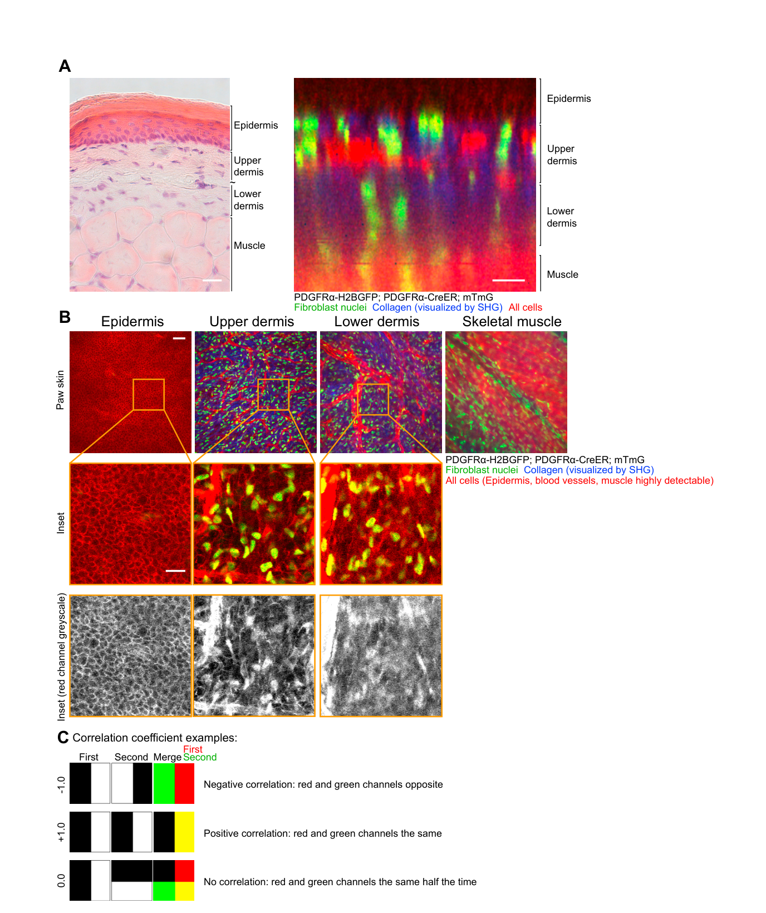
(A) 无毛足底皮肤冰冻切片的代表性 H&E 染色（左图）与标记了
PDGFRα-H2BGFP 和 mTmG 等位基因及二次谐波信号（SHG）的活体成像小鼠足底的代表性 Z 投影（约 0.5 μm 厚，右图）的并排比较。图中标注了表皮（Epidermis）、真皮（dermis）及其下方的骨骼肌（skeletal muscle）。二次谐波信号是某些分子在双光子光源激发下无需任何外源标记而产生的波长为入射光一半的光信号。通常，结构分子（例如胶原蛋白）发射这种光，在我们的成像条件下于蓝色通道中捕获。比例尺，20 μm。(B) 来自 Video S1 的帧图，该视频为
PDGFRα-H2BGFP; mTmG 活体小鼠足底真皮的活体成像 Z 轴堆栈。表皮细胞（第 1 列）明显被 membrane-tdTomato 标记。毛细血管（用作地标）在上层真皮中可见（第 2 列），同时可见绿色成纤维细胞核（PDGFRα-H2BGFP）和胶原蛋白（上述二次谐波信号）。较粗的血管在下层真皮中可见（第 3 列）。骨骼肌层在第 4 列中可见。虽然 mTmG（未重组形式为 membrane-tdTomato）标记所有细胞，但某些细胞特别容易检测到，例如表皮、血管和肌肉。成纤维细胞的 membrane-tdTomato 虽然可见，但难以与邻近细胞区分（第 2 行第 2、3 列）。因此，在后续图像中我们通常仅展示成纤维细胞特异性重组后的膜-GFP（membrane-GFP）。比例尺，50 μm；插图比例尺，20 μm。(C) 图像相关系数分析的不同可能结果示例（正相关 +1.0：红绿通道相同；无相关 0.0：红绿通道一半时间相同；负相关 −1.0：红绿通道相反）。
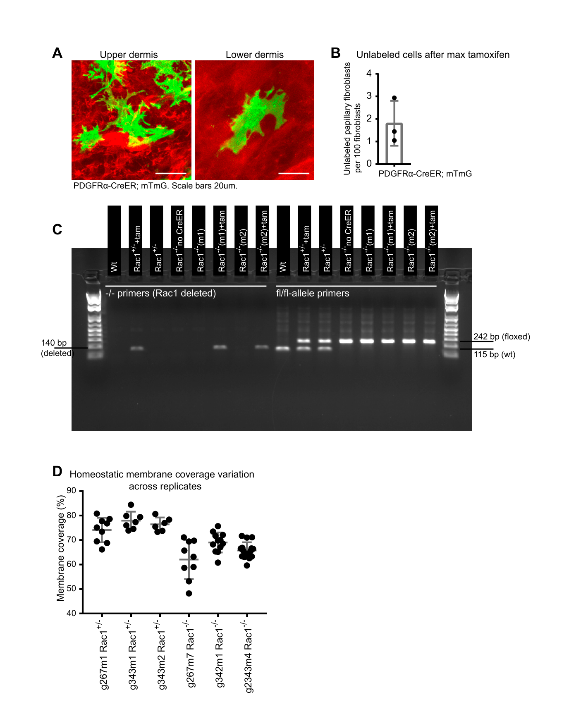
(A) 与 Figure 2A（上行）完全相同的图像，但同时显示绿色（membrane-GFP）和红色（membrane-tdTomato）通道（
PDGFRα-CreER; R26-loxP-membraneTomato-STOP-membraneGFP (mTmG)）。membrane-tdTomato 标记的可检测性较低且由所有细胞表达，因此我们通常仅呈现 mTmG 构建体中成纤维细胞特异性的 membrane-GFP 标记。此外，我们发现 membrane-GFP 的灰度投影能够更好地呈现细胞膜的精细细节。比例尺，20 μm。(B) 在
PDGFRα-H2BGFP; PDGFRα-CreER; mTmG 小鼠经最大剂量他莫昔芬诱导（3 次 60 mg/kg 体重）后，剩余的 PDGFRα-H2BGFP 阳性、membrane-GFP 阴性细胞数量的定量。y 轴表示每 100 个成纤维细胞中未被膜标记的成纤维细胞数。平均重组率占总成纤维细胞（PDGFRα-H2BGFP）的 98.2% ± 1.0%。PDGFRα-H2BGFP 标记皮肤中的所有成纤维细胞。n = 3 只小鼠。(C) 代表性基因分型凝胶图，使用针对
Rac1−（左侧 8 道）和 Rac1fl（右侧 8 道）的特异性 DNA 引物，展示未重组与重组（+tam）Rac1 小鼠。通过在 6 天内给予 3 次 60 mg/kg 体重他莫昔芬诱导等位基因重组。引物 PO33 和 PO91 用于检测 Rac1wt（115 bp）和 Rac1fl（242 bp）（右侧 8 道）。引物 PO33 和 PO45 用于检测 Rac1−（150 bp / 图中标 140 bp）的存在（左侧 8 道）（Huang et al., 2011）。(D) 与 Figures 2E and 2G 使用的完全相同的数据集，但按每个生物学重复分列展示，以显示
Rac1+/− 和 Rac1−/− 之间稳态膜覆盖率的变异。每一列（例如“g267m1”）代表一只独立的小鼠。每个圆点代表该小鼠内的一个独立采样区域。每只小鼠的样本取平均值后呈现于 Figure 2G。
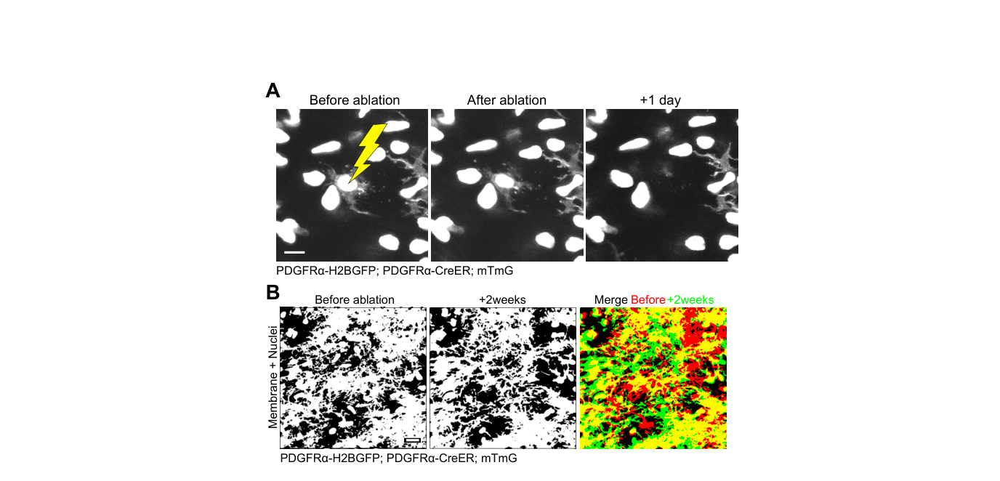
(A) 激光细胞消融后的代表性时间进程，表明细胞消融后细胞膜不会残留。图示为单个膜-GFP 标记的成纤维细胞在消融前和消融后即刻的状态。在 +1 天重访时，细胞核和细胞膜均不再存在，提示激光消融 1 天后不会残留带标记的细胞碎片（debris）。比例尺，10 μm。
(B) 与 Figure 3B 使用的完全相同的图像，但提高了亮度以展示消融前原始细胞膜与消融后 +2 周新占据细胞膜的位置。尽管新的细胞膜以相似的程度占据该区域，但它并不占据该区域内完全相同的位置，因为右侧的合并图（merge）显示出若干仅呈绿色或仅呈红色的区域。比例尺，20 μm。
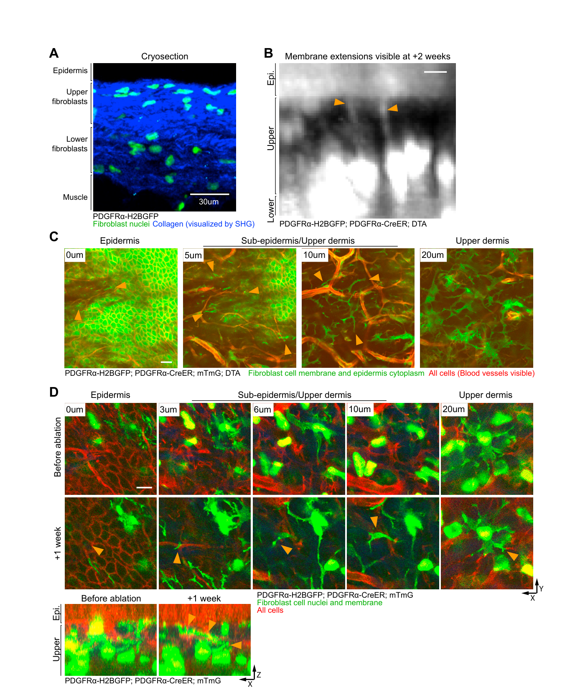
(A) 足底真皮的代表性冰冻切片，其中成纤维细胞核被标记（
PDGFRα-H2BGFP），胶原蛋白通过二次谐波信号（SHG）以蓝色显示。成纤维细胞被分为两组（上层成纤维细胞与下层成纤维细胞），以检验上层成纤维细胞核 H2BGFP 信号的平均亮度是否更高。比例尺，30 μm。代表 n = 4 只小鼠的结果。(B) 消融后 +2 周时，结合核标记拍摄的垂直膜延伸单张图像。表皮与成纤维细胞核之间可见细胞缺失空间。在此空间内，隐约可见两条膜延伸（箭头/arrowheads）。由于 H2BGFP 远亮于 membrane-GFP，且 Z 轴分辨率低于 XY 平面，因此在与 H2BGFP 联用时较难观察到 membrane-GFP 延伸。比例尺，10 μm。
(C) 他莫昔芬诱导后 +6 周的单个 Z 轴堆栈代表性图像。垂直膜延伸在表皮下区域表现为纤细的膜“孤岛（islands）”。完整的细胞体在 20 μm 深度处可见。比例尺，20 μm。
(D) 展示上层真皮激光消融后来自下方细胞的垂直膜突起的代表性图像。图示为激光消融前（第 1 行）及消融后 +1 周（第 2 行）的 Z 轴堆栈投影。最左侧为表皮（0 μm 深度），向右逐渐加深。激光消融前未见 membrane-GFP 标记的垂直突起（第 1 行），但在 +1 周时可见一条新的垂直突起，由橙色箭头高亮标出（第 2 行）。第 3 行为 XZ 投影，上方为表皮（Epi.），下方为上层真皮，分别对应上方第 1 行和第 2 行的同一区域在消融前（左图）和 +1 周（右图）的状态。同一条新的垂直突起以橙色箭头标出。比例尺，10 μm。
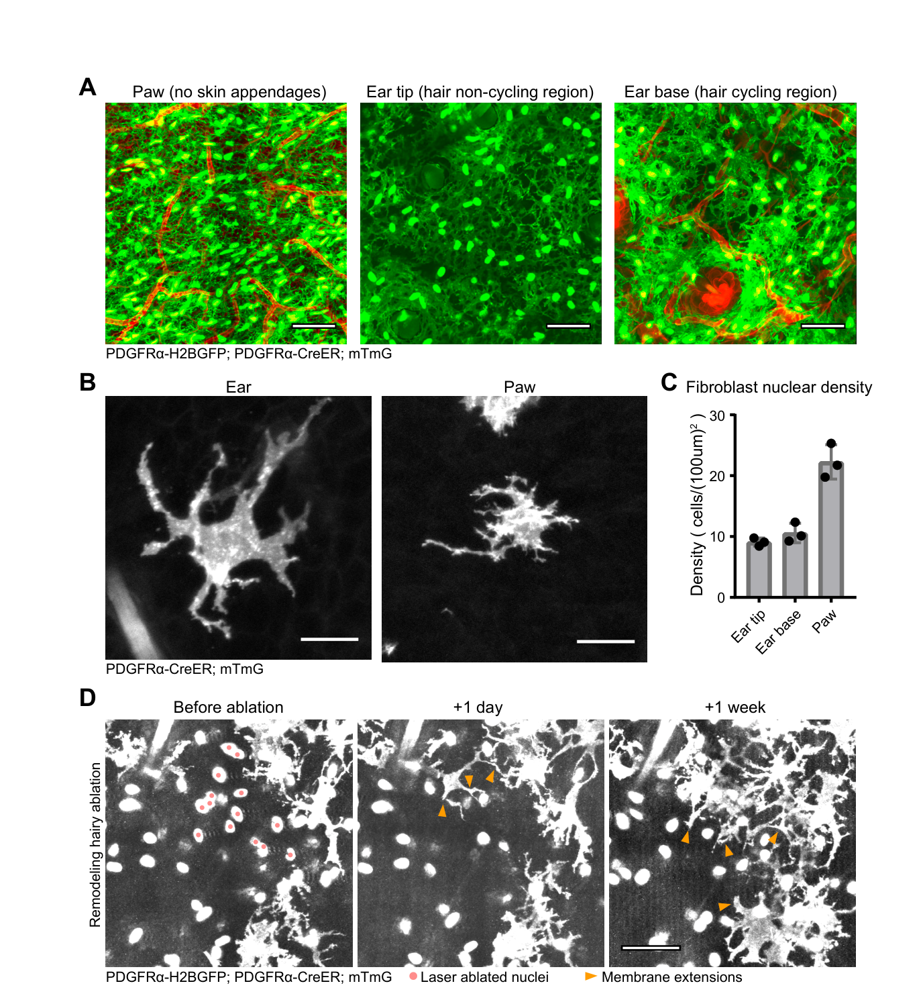
(A) 足底（第 1 列）、耳尖（第 2 列）和耳根（第 3 列）中通过细胞核（
PDGFRα-H2BGFP）和膜-GFP 标记的成纤维细胞代表性图像。尽管耳部与足底的细胞核密度不同，但该区域的膜占据率相似。比例尺，50 μm。(B) 来自耳部（左）和足底（右）的成纤维细胞代表性图像，便于比较形态学差异。耳部成纤维细胞体积更大，且似乎比足底成纤维细胞具有更少的精细突起。比例尺 = 20 μm。
(C) 耳尖、耳根和足底成纤维细胞密度的定量。耳部（耳尖与耳根）成纤维细胞的密度低于足底，且这些成纤维细胞体积更大 (B)。每个区域 n = 3 只小鼠。
(D) 重塑有毛皮肤中，在激光消融粉色标记的细胞核（消融前）后，核与膜-GFP 标记成纤维细胞（
PDGFRα-H2BGFP; PDGFRα-CreER; mTmG）的代表性时间进程。消融后 1 天（+1 day），橙色箭头标出了一些新的膜延伸。消融后 1 周（+1 week），观察到广泛的膜动态变化（橙色箭头标出）。在这种重塑有毛皮肤中，成纤维细胞核的位置也不稳定，+1 天与 +1 周之间细胞核不再处于相同位置，被消融区域似乎被细胞核和细胞膜重新定植。比例尺，50 μm。
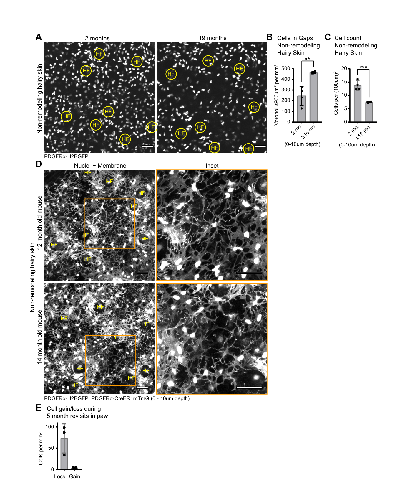
(A) 2 月龄（左）和 19 月龄（右）非重塑有毛皮肤中成纤维细胞（
PDGFRα-H2BGFP）的代表性图像。毛囊位置以“HF”及一个直径近似该 Z 切片中毛囊直径的圆圈标出。可见 19 月龄小鼠中密度降低，且密度降低并非在整个组织中均匀发生，而是以局部成纤维细胞丢失簇的形式出现，与足底皮肤相似（Figure 6A）。比例尺，50 μm。n = 3 只小鼠。(B) 在非重塑有毛皮肤上层真皮 1000 μm × 1000 μm × 10 μm 区域中采样、Voronoi 分析中细胞面积超过 900 μm2 的数量。n = 4（2 月龄）；n = 4（16 月龄及以上）。p = 0.0024（2 月龄对比 ≥16 月龄）。误差线为标准差（std. dev.）。
(C) 在非重塑有毛皮肤上层真皮 1000 μm × 1000 μm × 10 μm 区域中采样的细胞密度。n = 4（2 月龄）；n = 4（16 月龄及以上）。p = 0.0004（2 月龄对比 ≥16 月龄）。误差线为标准差（std. dev.）。
(D) 非重塑有毛皮肤中成纤维细胞膜的两个代表性示例（上和下）。比例尺，50 μm；右图插图比例尺，50 μm。n = 4。
(E) 同一批小鼠相同区域在 5 个月期间非黄色细胞数量的定量。对应代表性时间进程见 Figure 6D。纯红色细胞表示细胞丢失（左柱），纯绿色细胞表示细胞增加（右柱）。样本采自 3 只重访小鼠中面积介于 200 μm2 至 2800 μm2 不等的区域。细胞丢失远超细胞增加。误差线表示一个标准差。n = 3 只小鼠。
一、文章的核心新颖点（Novelty）
颠覆传统认知：体内成纤维细胞高度“位置稳定”，而非自由迁移
过去几十年对成纤维细胞的认知主要来自二维体外培养（如划痕实验）和离体切片，普遍认为成纤维细胞是高度活跃迁移、受刺激即快速增殖的细胞。本文首次通过活体双光子纵向追踪（数天至 5 个月）证明：在未受干扰的成年非重塑皮肤中，成纤维细胞核几乎完全固定在原位（位置稳定性，Positional Stability），甚至在局部清除 20–30 个邻近细胞后，周围细胞依然不迁移、不增殖来补充细胞数量。
提出体内稳态核心机制：无迁移伴随的 Rac1 依赖性“膜延伸代偿”
既然细胞核不动、数量不恢复，组织如何应对细胞丢失？作者巧妙结合稀疏/高密度膜标记（mTmG），发现虽然主细胞体稳如磐石，但细胞膜却高度动态：正常稳态下占据约 77% 的上层真皮空间；一旦邻居丢失，周围细胞便通过 Rac1 依赖的细胞骨架重塑伸出长长的膜突起填补空缺（恢复至约 93% 的膜覆盖率），实现了“细胞体不动、细胞膜补位”的低能耗代偿。
揭示损伤尺度的分级响应与“三维垂直膜延伸”
论文清晰界定了成纤维细胞的响应阈值：单纯局部细胞丢失仅触发膜延伸；只有当损伤升级到破坏细胞外基质胶原（SHG 可见）或大规模遗传清除（高剂量 DTA）时，才会联合启动经典的增殖与迁移。更令人惊叹的是，在大规模清除最表层成纤维细胞后，原本呈扁平 XY 极化的深层成纤维细胞竟然能向上伸出垂直膜突起（Vertical Projections）重新接触表皮（85% 的细胞），提示真皮-表皮物理接触具有极高的生理优先级。
发现“无炎症、无创伤”下的生理性位置稳定性解除
通过对比无毛足底、非重塑有毛耳尖与活跃生长期（anagen）毛囊周围的耳根皮肤，作者证明位置稳定性并非不可逆转：在生理性毛囊周期重塑期间，无需创伤或炎症，成纤维细胞即可脱离位置稳定性并发生重排与细胞数再定植。这暗示体内存在一条非纤维化、生理可控的成纤维细胞激活通路。
改写皮肤衰老模型：局部成簇丢失的不可逆累积
传统组织学认为衰老伴随成纤维细胞密度的“均匀下降”。本文借助 Voronoi 图空间分析与长达 5 个月的活体追踪证明：衰老过程中的细胞丢失呈高度局部化的成簇空洞（Localized Clusters），宛如激光消融留下的印记，且因位置稳定性而永不补充细胞核，只能靠邻近细胞膜延伸维持表面覆盖——这是“一生中局部微创伤永久镌刻在真皮中”的生动写照。
二、文章的重要性与科学意义（Significance & Importance）
- 确立器官间质稳态的普适范式：过去组织稳态研究多聚焦于高更新率的上皮组织（如表皮、肠上皮，依赖干细胞持续分裂替换），而对占器官体积主体的低更新率间质细胞（成纤维细胞）知之甚少。本文首次提出“位置稳定性 + 空间膜占据”双原则，揭示了间质网络通过调节单细胞体积/膜面积而非细胞分裂来维持 ECM 监视与旁分泌通讯的节能策略。
- 阐明“复合材料”式的器官力学架构：表皮基底干细胞体积小、更新极快，而其上方的分化角质形成细胞与下方的真皮成纤维细胞体积大、位置稳定。作者将其类比为胶合板或碳纤维等复合材料（Composite Materials），为理解跨胚层组织协同维持器官稳健性提供了全新视角。
- 对临床抗衰老与再生医学的直接启示：
- 解释了临床上点阵激光（Fractional Laser）为何能抗皱：单纯细微损伤不引发成纤维细胞增殖，而点阵激光通过可控地损伤真皮胶原（类似本文 Figure 4B），突破了成纤维细胞的“位置稳定阈值”，迫使其重启增殖和迁移，从而修复衰老累积的细胞空洞。
- 毛囊生长期无炎症解除位置稳定性的发现，为未来开发非侵入性药物靶点（无需激光创伤、也不诱发瘢痕纤维化）来唤醒衰老真皮成纤维细胞提供了理论依据。
- 对纤维化与肿瘤微环境研究的指导意义：明确了健康真皮成纤维细胞的“稳态基线行为”，为研究病理状态下（如硬皮病、瘢痕疙瘩、肿瘤相关成纤维细胞 CAF）细胞为何打破位置稳定性、失控增殖和过度分泌 ECM 提供了重要参照，同时提醒体外培养模型必须考虑三维力学约束与邻近接触网络。
三、背景知识补充（Background Knowledge）
1. 小鼠皮肤真皮分层与成纤维细胞异质性（Upper vs. Lower Dermis）
正如 Driskell et al. (Nature, 2013) 所奠定的经典框架，哺乳动物真皮可分为两层：上层真皮（乳头层真皮，Papillary Dermis）紧邻表皮基底膜，细胞密度高、胶原纤维较细，负责与表皮/毛囊进行信号交流；下层真皮（网状层真皮，Reticular Dermis）细胞密度较低、胶原束粗大密集，主要提供机械抗拉强度，也是伤口愈合早期首先迁入并沉积瘢痕基质的细胞群。在发育期（胚胎至出生后第 10 天），成纤维细胞活跃增殖，随后进入极低增殖率的稳态期。本研究同时考察了上下两层（10–20 μm 对比 40–60 μm），证明位置稳定性贯穿全层真皮。
2. 双光子活体成像（2-Photon Intravital Microscopy）与二次谐波（SHG）
双光子显微镜采用近红外长波长飞秒脉冲激光（本文成像用 940 nm，消融用 810 nm），具有穿透深度大（可达 120 μm 以上，直达真皮深层及骨骼肌）、光毒性低、光漂白仅限于焦平面的优势，因而能对同一只活体小鼠的同一片皮肤反复成像数周至数月（Revisits）。
二次谐波产生（Second Harmonic Generation, SHG）是一种非线性光学现象：当高强度双光子激光照射到缺乏中心对称性的高度有序生物大分子（如 I 型胶原蛋白三螺旋纤维）时，两个入射光子会瞬间合并为一个能量加倍、波长减半的光子（940 nm → 470 nm 蓝光）。因此无需任何荧光染料或抗体标记即可在活体中实时观察胶原网络是否完整或受损。
3. 本文核心小鼠遗传学工具箱（Genetic Tools）
PDGFRα-H2BGFP：血小板衍生生长因子受体 α（PDGFRα）是真皮成纤维细胞的经典泛标志物。该品系将组蛋白 H2B-GFP 敲入内源 Pdgfra 基因座，使所有成纤维细胞的细胞核发出极亮的绿色荧光，非常适合长期追踪细胞核位置与密度。PDGFRα-CreER：他莫昔芬（Tamoxifen）诱导型 Cre 重组酶。通过调节他莫昔芬剂量（低剂量 1 mg/kg vs 高剂量 3×60 mg/kg），既能实现稀疏单细胞标记（观察单个细胞形态与膜延伸），也能实现近 100%（98.2%）全群体标记或基因敲除。Rosa26-mTmG：双色膜荧光报告系统。未重组时，全身所有细胞膜表达红色荧光（membrane-tdTomato，可清晰勾勒血管和表皮作为重访定位地标）；Cre 重组后，切掉 tdTomato-STOP，转为表达绿色膜荧光（membrane-GFP），从而极清晰地呈现成纤维细胞精细的膜突起网络。Rosa26-loxP-eGFP-(stop)-DTA：白喉毒素 A 链（Diphtheria Toxin Fragment A）可抑制细胞内蛋白质合成导致细胞自主凋亡，且不具有外源扩散毒性，是理想的“无物理创伤”遗传学细胞清除工具。Rac1fl/fl：条件性敲除 Rho 家族小 GTP 酶 Rac1。Rac1 是调控肌动蛋白（actin）分支聚合、驱动片状伪足（lamellipodia）和膜突起形成的核心分子开关。
4. 定量分析利器：图像相关系数与 Voronoi 图（泰森多边形）
- 二维图像相关系数（Image Correlation Coefficient, r）：将不同时间点（如 Day 0 和 +2 weeks）的荧光图像分别放入红、绿通道，逐像素计算相关性。r = +1 表示完全重叠，r = 0 表示随机分布。作者极其严谨地设置了重固定阳性对照（Remount, Re.）——让小鼠苏醒后 1 小时内重新上机拍摄——以此剥离皮肤拉伸/贴片形变带来的技术误差，证明真皮成纤维细胞在 2 周内的位移几乎等于零。
- Voronoi 图（泰森多边形）：以每个成纤维细胞核为“种子点”，划分出每个细胞最近的“领地多边形”。正常年轻真皮细胞均匀分布，多边形面积小且均一（深蓝色）；一旦出现局部成簇细胞丢失，空洞边缘细胞对应的多边形面积会急剧膨胀（≥900 μm2，呈现亮黄色）。这种方法把肉眼主观看到的“空洞”转化为了严格可统计的客观指标。
四、核心专业词汇表（Technical Glossary）
| 英文原词 | 中文译名 | 简明专业解释 |
|---|---|---|
| Homeostasis | 稳态 | 生物体或组织在面对内外环境变化时，维持其细胞数量、结构与功能相对稳定平衡的状态。 |
| Positional stability | 位置稳定性 | 本文核心概念，指成纤维细胞核及主细胞体在数周至数月内固定于真皮原位、不发生迁移的特性。 |
| Membrane occupancy | 膜占据 / 膜覆盖率 | 成纤维细胞膜及其突起在真皮二维/三维空间中所占据的面积或体积比例（上层真皮约 77%）。 |
| Intravital imaging | 活体成像 | 在活体麻醉动物完整器官上进行的显微成像技术，可跨时间点反复“重访（revisits）”同一视野。 |
| Laser ablation | 激光消融 | 利用高功率聚焦双光子激光精确摧毁单个目标细胞核（或局部胶原基质）的微操控技术。 |
| Second harmonic generation (SHG) | 二次谐波产生 | 非中心对称有序分子（如胶原蛋白）在双光子激发下产生半波长光子的无标记光学成像机制。 |
| Lamellipodia / Filopodia | 片状伪足 / 丝状伪足 | 细胞边缘由肌动蛋白聚合驱动形成的宽片状或细丝状膜突起，传统上与细胞迁移和环境探测相关。 |
| Rac1 | Rac1（Rho 家族小 GTP 酶） | 调控肌动蛋白细胞骨架重塑和细胞膜突起延伸的关键信号分子。 |
| Diphtheria toxin A (DTA) | 白喉毒素 A 链 | 通过 ADP-核糖基化失活延伸因子 EF-2 来阻断蛋白合成、诱导细胞自主死亡的遗传消融工具。 |
| Penetrance | 外显率 | 在遗传学中指携带特定基因型（或诱导重组系统）的个体/细胞中表现出相应表型（如发生重组或死亡）的比例。 |
| Voronoi diagram | 泰森多边形图 / Voronoi 图 | 依据平面上离散种子点（细胞核）划分最近邻区域的计算几何图形，用于量化细胞空间排布与局部空隙。 |
| Remount (Re.) | 重固定（阳性对照） | 将同一小鼠取下苏醒后于 1 小时内重新固定成像，用于评估机械贴片形变带来的基线位移误差。 |
| Anagen / Hair follicle cycling | 毛发生长期 / 毛囊周期循环 | 毛囊经历生长（anagen）、退行（catagen）和休止（telogen）的周期性再生过程，生长期伴随剧烈的真皮重塑。 |
| Perdurant | 持久的 / 持续存在的 | 文中用于形容细胞丢失与膜延伸所导致的长期不可逆的真皮结构改变。 |
五、文献汇报（Journal Club）演讲逻辑与 Q&A 预演
建议汇报逻辑链（约 15–20 分钟）
- 抛痛点（1 min）：教科书里成纤维细胞在培养皿里跑得飞快、分裂旺盛，但它们在活体真皮里到底怎么维持稳态？
- 建模型 + 反常识发现（Figure 1, 3 min）：展示双光子活体追踪足底皮肤；强调 Remount 阳性对照的严谨性；即使激光或 DTA 干掉 20–30 个邻居，剩下的细胞核竟然一动不动！
- 揭秘代偿机制（Figures 2 & 3, 5 min）：细胞核不动，那空位怎么办？转看细胞膜（mTmG）→ 平时占 77% 空间、边缘不停伸缩 → 邻居死后，靠 Rac1 依赖的膜延伸迅速补位至 93%（附单细胞消融排除残骸干扰的对照 Figure S3A）。
- 拓展边界条件（Figures 4 & 5, 4 min）：① 加大损伤伤及胶原（SHG）或高剂量 DTA → 激活增殖迁移 + 惊艳的垂直膜延伸触及表皮；② 换到有毛皮肤 → 静止期（耳尖）同样稳定，而毛囊生长期（耳根）生理性打破稳定性。
- 落脚生理衰老与临床转化（Figure 6 + Discussion, 4 min）：衰老不是均匀掉细胞，而是局部成簇空洞的永久累积（Voronoi 图直观呈现）；串联临床点阵激光抗皱原理与未来无创抗衰靶点。
导师/听众可能提出的犀利问题（Q&A 准备）
- Q1：为什么高剂量 DTA 主要清除了上层成纤维细胞，下层却很少丢失？
答：作者在 STAR★Methods 和 Figure S4A 中专门做了解释：冰冻切片显示内源性PDGFRα-H2BGFP在上层成纤维细胞中的表达强度明显高于下层，加之PDGFRα-CreER转基因品系的插入位点效应，导致上层细胞的重组外显率远高于下层。 - Q2：激光消融后 2 周看到的绿色膜，会不会只是死细胞残留的膜碎片？
答：作者在 Figure S3A 做了单细胞消融对照，证明被消融细胞的核与膜在 +1 天内就完全消失；且 Figure S3B 叠加图显示 +2 周的新膜位置与原膜完全不同；再加上稀疏标记“类划痕”实验（Figure 3E）直接拍到邻居细胞伸出膜突起，三重证据排除了碎片残留假说。 - Q3：成纤维细胞为什么选择“伸长细胞膜”而不是“分裂增殖”来填补局部空缺？
答：① 能量经济学：合成新膜/重塑骨架比 DNA 复制和有丝分裂能耗低得多；② 组织结构保护：成纤维细胞深嵌在致密胶原基质中，维持位置稳定有助于各自划片维护 ECM 微环境，同时避免过度增殖引发纤维化（瘢痕）。 - Q4：本文有哪些局限性（Limitations）可以在汇报结尾点评？
答：① 尚未直接检测膜延伸代偿后的衰老真皮在生物力学性质（弹性/刚度）或胶原合成功能上是否真的等同于年轻细胞；② 毛囊生长期成纤维细胞位置稳定性丧失的上游分子信号通路（物理挤压 vs Wnt/Shh 等旁分泌信号）尚未阐明；③ Rac1 敲除在稳态下耗时 3–4 个月才显出膜占据下降，其上游感受“邻居丢失”的感应机制（如接触抑制解除、机械张力变化或凋亡信号）仍有待后续挖掘。